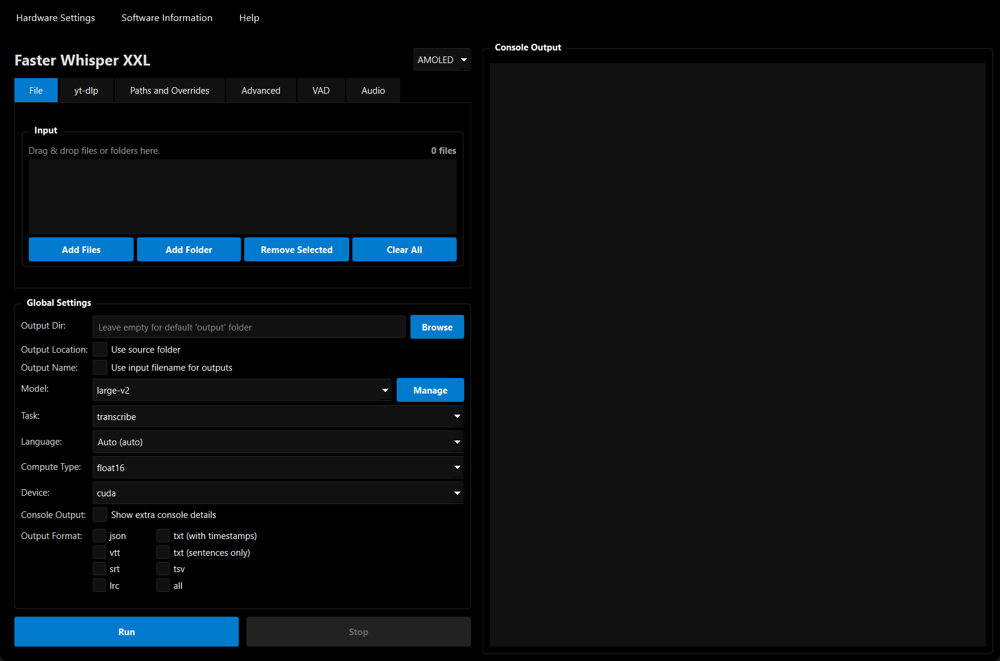

Transcribe audio faster.
Keep workflows simple.
Download YouTube audio or video, batch transcribe local files, and switch between custom Hugging Face models with a clean, GPU-aware interface.

Full pipeline control.
Every step of the transcription workflow is streamlined and heavily optimized within a unified interface.
Smart Ingestion
Drag and drop local files, paste YouTube links directly, or batch process entire directories effortlessly.
Multiple Outputs
Export simultaneously to JSON, VTT, SRT, LRC, TXT, and TSV formats.
Hardware Aware
Hardware optimization can recommend GPU/CPU, model, and compute settings for your system.
On-the-fly Conversion
If a repo has Transformers-only weights, the app prompts (or auto-converts) to CT2 so it can run in Faster-Whisper-XXL.
Model Control
Enable, verify, and switch built-in or custom models directly in Manage Models.
Fast setup, fast results.
From launch to output in three simple steps.
Launch & Auto-Download
On first run, the app can download Faster-Whisper-XXL and FFmpeg dependencies if they are missing.
Configure & Queue
Select your desired model, transcription/translation task, and check the output formats you need. Drop in your files.
Transcribe & Export
Monitor real-time progress. Save outputs to your chosen output folder or next to the source media.
Custom models, no manual conversion scripts.
Bring in any Hugging Face model and keep your pipeline consistent. CT2 repos download directly, while Transformers-only repos prompt conversion (or auto-convert if enabled). EXE builds can use a converter bundle; source builds use your configured Python environment.
Read the DocumentationReady to optimize your workflow?
Grab the standalone executable or build it directly from source.